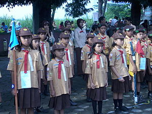
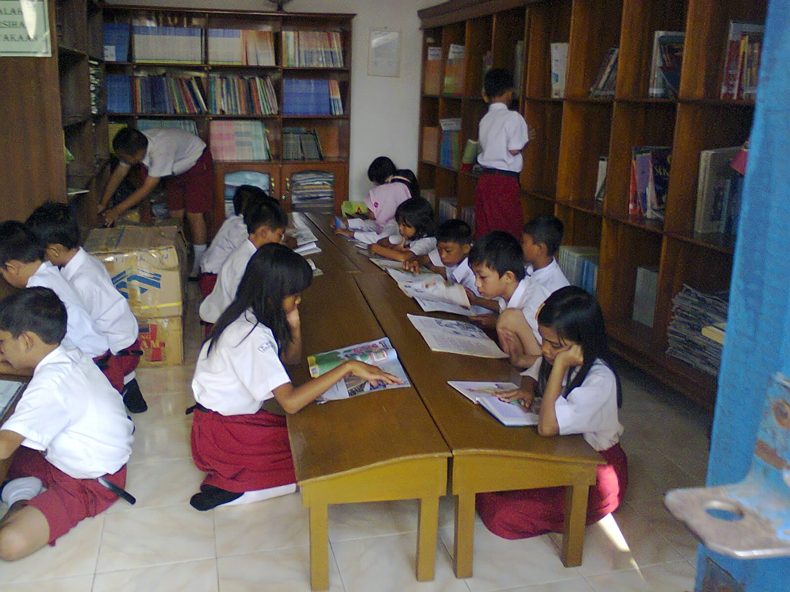

Selamat datang di website resmi SD KATOLIK PAREPARE. Website ini menyajikan informasi mengenai profil sekolah, kelas, serta berbagai kegiatan yang dilaksanakan oleh SD Katolik Parepare.
SD Katolik Parepare, adalah sebuah jenjang pendidikan Formal Swasta berakreditasi B, yang terletak di Kelurahan Malusetasi, Kecamatan Ujung Kota Parepare. SD ini dibangun pada tahun 1953 dan pada saat ini SD tersebut dinahkodai oleh Klemens Kari Kolin,S.Pd. SD. Sudah banyak peserta didik yang telah ditelorkannya. Bahkan ada yang menjadi pejabat teras di Nusantara ini. SD Katolik pada saat ini kelihatannya jalan di tempat. Namun tidak bisa kita pungkiri akan torehan sejarah dalam kancah dunia pendidikan Parepare pada tahun-tahun sebelumnya. Oleh karena itu supaya sejarah itu bisa terulang kembali, maka SD Katolik Parepare memulai suatu strategi baru, pelan tapi pasti

Informasi spesifik mengenai daftar kalimat atau deskripsi ekstrakurikuler di SD Katolik Parepare secara mendetail tidak tersedia dalam sumber publik terkini. Namun, berdasarkan profil umum sekolah dan kegiatan rutin yang dilaporkan, berikut adalah poin-poin yang dapat digunakan untuk menyusun kalimat terkait ekstrakurikuler di sana: Kegiatan Keagamaan: Sekolah ini memiliki rutinitas ibadah pagi yang kuat untuk membentuk karakter religius siswa. Kalimat yang bisa digunakan: "Siswa mengikuti rutinitas ibadah pagi sebagai bagian dari pembentukan karakter spiritual di sekolah." Pramuka & Seni: Secara umum, sekolah dasar di bawah naungan yayasan Katolik sering menyelenggarakan ekstrakurikuler wajib seperti Pramuka serta kegiatan seni seperti Paduan Suara dan Seni Tari.

SD Katolik di Parepare umumnya dilengkapi fasilitas penunjang pendidikan yang lengkap dan nyaman, meliputi ruang kelas yang kondusif, perpustakaan, sarana ibadah, serta lapangan olahraga untuk menunjang tumbuh kembang siswa.